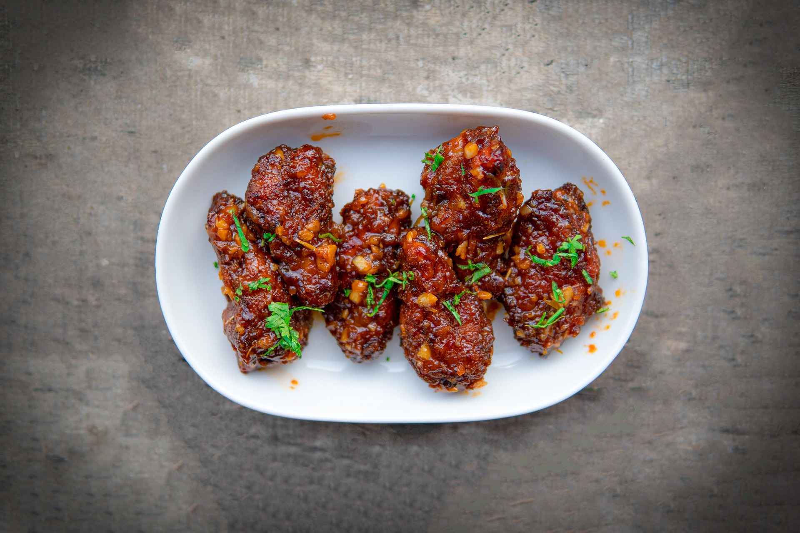

Home
Crispy Buffalo Style Chicken Wings

Description
What came first, the sweet or the tangy? In the case of this chicken wing recipe they both came together to absolutely tantalize your
tastebuds. Finger lickin’ chicken for any occasion, its super simple to make but packs a punch in flavour and textures. From the land
of the free and the home of the brave straight to your stomach, this all american classic is a great dish to have in your arsenal to impress
any guests!
Time
1 hr 10 mins
Ingredients
- 12 free-range chicken wings (roughly 1kg)
- 2 teaspoons baking powder
- Olive oil
- Salt
- Pepper
For the Buffalo sauce
- 1 tablespoon smoked paprika
- 1 teaspoon dried rosemary
- 4 tablespoons natural yoghurt
- 30g blue cheese
- ½ a bunch of fresh chives (10g)
- 2 tablespoons buffalo hot sauce (or your favorite hot sauce)
Steps
- Preheat the oven to 180ºC/350°F/gas 4. Pat the chicken wings dry with kitchen paper, then season with a couple pinches of sea salt and black pepper.
- Place in a large bowl and toss with the baking powder, paprika and dried rosemary to coat.
- Place the wings on an oiled rack on top of a baking tray and bake for 30 minutes. Turn the wings over, turn the heat up to 220ºC/425°F/gas 7 and roast
for a further 30 minutes, or until beautifully golden and crisp.
- In a separate bowl, spoon the yoghurt with a pinch of pepper, then crumble in the blue cheese. Finely chop the chives, add half to the yoghurt and mix well.
- Add the hot crispy chicken wings to the bowl and toss to coat. Arrange on a platter and scatter over the remaining chives, then serve with the buffalo sauce for dunking.